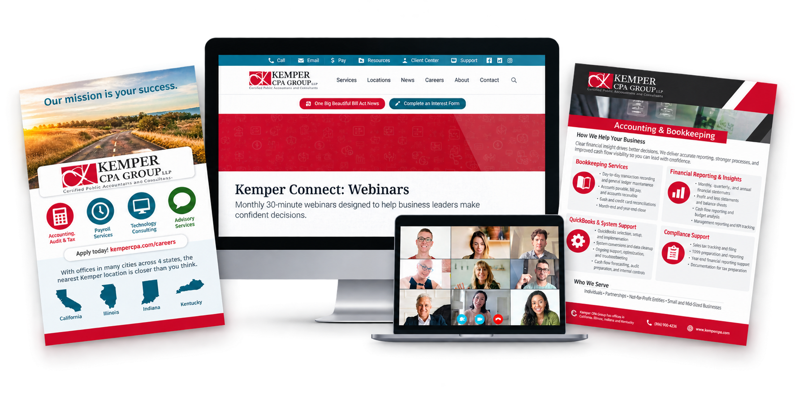

Professional Services Marketing
Building a marketing function for a growing professional services firm.
As the first employee hired solely to focus on marketing at Kemper CPA Group, I helped bring more structure, consistency, and strategy to marketing across a complex, multi-office organization.

A strong organization with untapped marketing potential.
Kemper CPA Group already had the scale, expertise, and service depth of a large professional services firm. With 26 offices, more than 400 employees, more than 80 partners, and five divisions, the organization also had significant opportunity to take a more intentional approach to marketing.
When I joined Kemper, I became the first employee hired solely to focus on marketing. Working closely with the Director of Growth, I helped shape strategy while independently managing and executing much of the firm's day-to-day marketing activity.


Turning individual efforts into a more intentional system.
One of the clearest opportunities was creating more consistency across recurring marketing activity. Social media became more strategic, with planned content, regular scheduling, service-focused campaigns, and ongoing performance reporting.
Instead of treating channels independently, I began connecting social media, blogs, website content, recruiting, events, and service-line initiatives so they could support one another and tell a more consistent story.
I also established repeatable processes for recurring brand needs, including employee headshots, apparel logo requests, promotional items, and business cards. These systems created greater consistency while making it easier to support a large, decentralized organization.
Digital Marketing
Connecting content, search, and strategy.


Moving beyond awareness to support business development.
My role at Kemper brought me much closer to the lead-generation and business-development process. Marketing was not simply about creating visibility. It also needed to help clients and prospects understand the full range of services available through the firm.
With five divisions offering complementary services, cross-selling became an important part of the strategy. Service spotlights, blogs, website content, webinars, and social campaigns created opportunities to educate audiences while supporting broader growth initiatives.
This work also extended into SEO and website strategy. Using Semrush and ongoing website analysis, I supported content development and optimization designed to improve visibility while maintaining the professional, advisory tone expected from the firm.
One brand across many audiences.
Marketing across 26 offices, four states, more than 80 partners, and five divisions requires balancing firmwide consistency with local needs and priorities.
Nearly every initiative involves different stakeholders, audiences, and business objectives. My role requires understanding when an approach should be customized and when standardization creates a stronger experience for the firm as a whole.
It also requires moving comfortably between strategy and execution. On any given initiative, I may help determine the approach, write the content, coordinate with the web team, develop supporting assets, plan distribution, and evaluate performance.
The Impact
A more structured and connected marketing approach.
Thinking beyond the individual deliverable.
This role changed the way I think about marketing. Instead of focusing only on individual campaigns or deliverables, I began thinking more about the systems, strategy, business goals, and relationships that connect them.
It strengthened my ability to work across a complex organization, make strategic recommendations, manage competing priorities, and carry ideas from planning through execution.